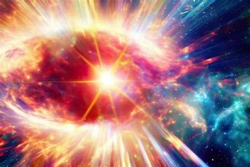

If you were to take a look at the sky at night you would be able to see so many wonderful things shining in the darkened sky. You'd be able to see many cool things like stars and on some occasions meteors in a meteor shower. You are also able to see planets in the sky you just need a telescope to help you search for them. There are also many other things that you can see in space like the Aurora Borealis. Some things you can't see like Superovas and Galaxies.
An Aurora Borealis happens by the sun shooting out solar winds and the Earth's magnetic field pulling them to the pulls of the Earth (North and South ends) and creating the Northern and Southern lights. For millions upon millions of years these explosions have happened and they would be beautiful to see for yourself. These explosions happen by a star reaching the end of its life span and collapsing under itself and gravity which causes the massive yet beautiful explosion to happen.
There are also many planets out there in the galaxy. There are planets than just the eight planets in our solar system. Scientists have been able to see many other planets and some similar to how our Earth is. Many other solar systems are also out there and have different suns. One of these suns is, Gamma Crucis. Gamma Crucis is different from our sun because it is a Red Giant which is what will happen to our sun in a very, very long time. There are also blackholes out there some in our solar system and some in others. Some planets out there are more habitable than Earth but some of them are a couple of light years away.